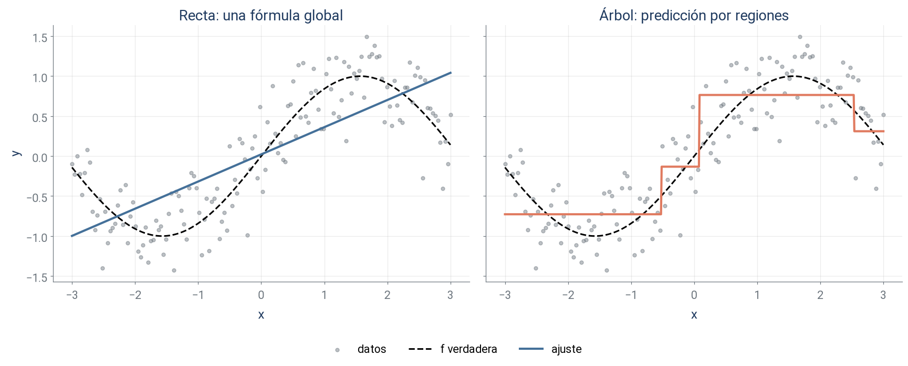
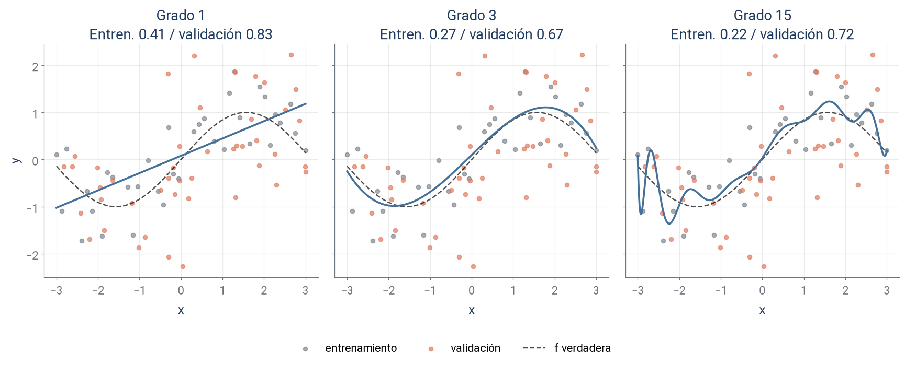
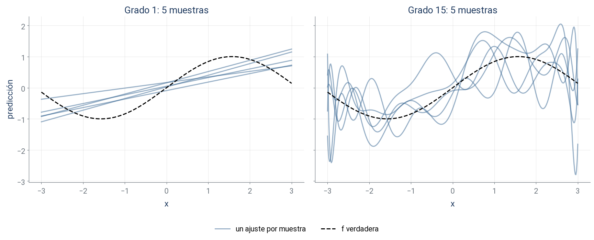
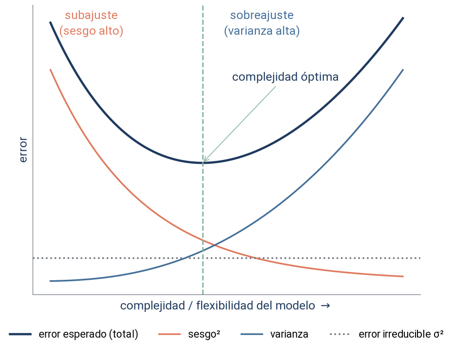
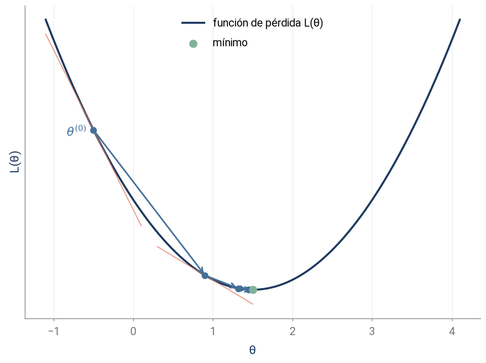
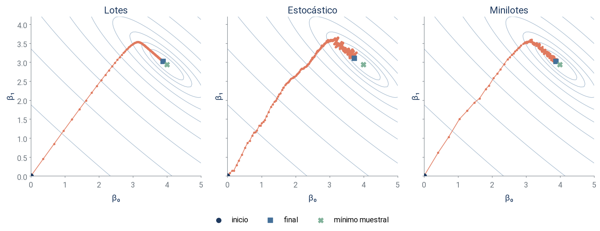
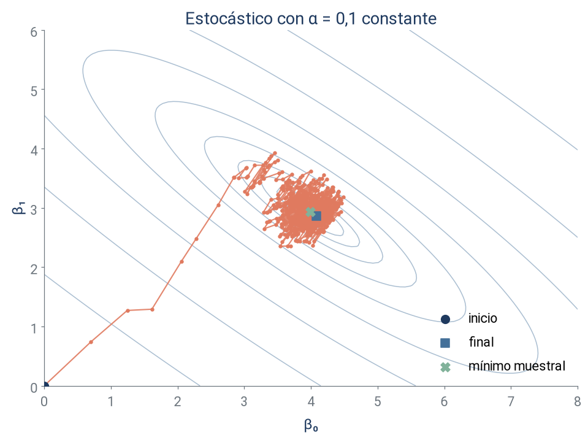
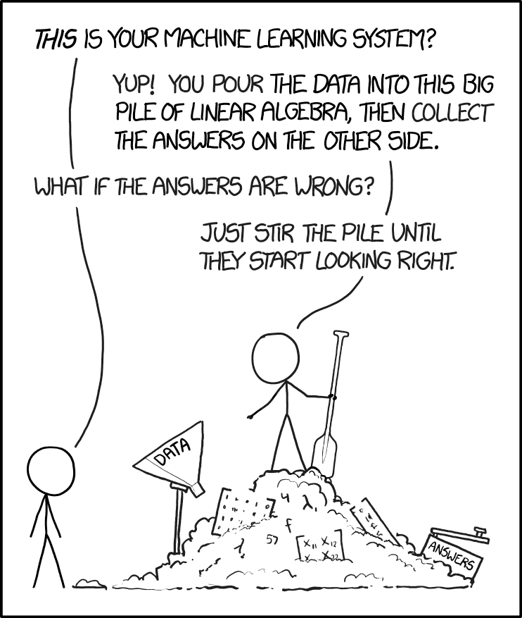

Técnicas Avanzadas de Predicción en Negocios
Pasad el ratón por cada anuncio (rueda o botones + / − para acercar el mapa). ¿Cuál es el más caro y cuál el más barato? Justificad la elección con dos variables.
Respuesta: precio. Predictores: distrito, tipo, distancia, capacidad, reseñas y valoración. Aprender es obtener una regla que prediga bien anuncios nuevos.
Fuente: Inside Airbnb, listado de Valencia disponible en los datos del curso. Distancia aproximada a la Plaza del Ayuntamiento. Mapa: © CARTO, © colaboradores de OpenStreetMap.
Al terminar, volveremos a Airbnb para elegir entre tres modelos entrenados con los datos del curso.
| Concepto | Qué describe | Ejemplo |
|---|---|---|
| Inteligencia artificial (IA) | Sistemas que realizan tareas asociadas a la inteligencia | Reconocer caras |
| Aprendizaje automático (ML) | Métodos de IA que aprenden a partir de datos | Aprender un clasificador usando ejemplos |
| Aprendizaje profundo (DL) | Métodos de ML basados en redes neuronales de múltiples capas | Aprender representaciones de imágenes |
Aprendizaje estadístico: perspectiva estadística sobre cómo aprender de los datos y evaluar la incertidumbre.
| Datos disponibles | Tarea |
|---|---|
| Predictores y respuesta numérica | Regresión: predecir el precio anunciado |
| Predictores y una categoría | Clasificación: predecir el abandono de un cliente |
| Características sin respuesta objetivo | No supervisada: agrupar alojamientos similares |
Las dos primeras son tareas supervisadas: aprendemos con respuestas conocidas.
Para pensar
¿Predecir el precio y agrupar alojamientos por sus características requieren la misma información?
Otros paradigmas
Semisupervisado, activo y reforzado aprenden con otro tipo de información. No forman parte del recorrido del curso.
| Objetivo predictivo | Objetivo causal |
|---|---|
| ¿Quién tiene más probabilidad de abandonar? | Una campaña de retención de clientes, ¿en quien reduce más su probabilidad de abandono? |
| Evaluar aciertos en clientes nuevos | Comparar qué ocurriría con y sin intervención |
| Necesita una evaluación representativa del uso | Necesita supuestos que identifiquen el efecto |
Las herramientas pueden coincidir. Una regresión sirve para predecir y el ML puede ayudar a estimar efectos causales.
Para pensar
¿Dirigiríais la campaña necesariamente a los clientes con más riesgo de abandono?
Usando el ejemplo de Airbnb, \(X\) contiene las características del alojamiento e \(y\) es su precio:
\[y = f(X) + \epsilon,\qquad f(X)=E(y\mid X),\qquad E(\epsilon\mid X)=0.\]
\(f(X)\): precio medio para unas características dadas.
\(\hat f(X)\): regla que estimamos con una muestra.
\(\epsilon\): variación del precio que esas características no permiten anticipar.
Dos fuentes de error
Podemos mejorar la estimación de \(f\). El ruido que permanece dado \(X\) limita la precisión.
X_c, y_c = tv.simulate_sin(n=150, noise=0.35, seed=0)
xx = np.linspace(-3, 3, 600).reshape(-1, 1)
recta = LinearRegression().fit(X_c, y_c)
arbol = DecisionTreeRegressor(max_depth=2, random_state=0).fit(X_c, y_c)
fig, axes = plt.subplots(1, 2, figsize=(16, 6.5), sharey=True)
for ax, modelo, titulo, color in zip(
axes, (recta, arbol), ("Recta: una fórmula global", "Árbol: predicción por regiones"),
(tv.BLUE, tv.TERRACOTTA)
):
ax.scatter(X_c, y_c, s=20, color=tv.GRAY, alpha=0.45, label="datos")
ax.plot(xx, np.sin(xx[:, 0]), "k--", lw=2, label="f verdadera")
ax.plot(xx, modelo.predict(xx), color=color, lw=2.7, label="ajuste")
ax.set_title(titulo)
ax.set_xlabel("x")
axes[0].set_ylabel("y")
fig.legend(*axes[0].get_legend_handles_labels(), loc="lower center", ncol=3)
fig.tight_layout(rect=(0, 0.08, 1, 1))
plt.show()
El error cuadrático medio (ECM o MSE) resume los errores de predicción:
\[\mathrm{MSE}=\frac{1}{n}\sum_{i=1}^{n}\left(y_i-\hat f(x_i)\right)^2.\]
Sobreajuste
Un ajuste excelente en entrenamiento puede empeorar las predicciones en datos nuevos.
Unidades
En Airbnb, el MSE se mide en \((\text{€/noche})^2\). Un error de 10 €/noche aporta 100.
X, y = tv.simulate_sin(n=50, noise=0.8, seed=42)
X_train, _, y_train, _ = train_test_split(X, y, test_size=0.3, random_state=42)
# Evaluación independiente y amplia, con la misma distribución de ruido.
rng_val = np.random.default_rng(2026)
X_val = rng_val.uniform(-3, 3, (2000, 1))
y_val = np.sin(X_val[:, 0]) + rng_val.normal(0, 0.8, len(X_val))
fig = tv.plot_degrees(X_train, y_train, X_val, y_val, f=np.sin,
degrees=(1, 3, 15), eval_label="validación", figsize=(16, 6.5))
plt.show()
35 observaciones de entrenamiento y 2.000 de validación (se dibujan 45). ¿Qué grado elegiríais? Explicad por qué el menor error de entrenamiento no basta.

Mismos valores de \(x\) y misma regla, con nuevas respuestas ruidosas en cada muestra. ¿Qué modelo cambia más? ¿Ser estable basta para predecir bien?
Para un \(x\) nuevo, promediamos sobre muestras de entrenamiento y sobre el ruido de la nueva respuesta:
\[E[(y-\hat f(x))^2]= \underbrace{\left(E[\hat f(x)]-f(x)\right)^2}_{\text{sesgo}^2} +\underbrace{\mathrm{Var}(\hat f(x))}_{\text{varianza}} +\underbrace{\sigma^2}_{\text{ruido irreducible}}.\]
| Componente | Qué describe |
|---|---|
| Sesgo | Distancia entre la predicción media del método y \(f(x)\) |
| Varianza | Cuánto cambia la predicción entre muestras |
| Ruido | Variación de \(y\) que permanece incluso conociendo \(f(x)\) |

Subajuste: el método no puede representar \(f\); el sesgo domina.
Sobreajuste: el método sigue el ruido de la muestra; la varianza domina.
Aceptar algo de sesgo puede reducir suficientemente la varianza.
Para pensar
¿Dónde situaríais la recta y el polinomio de grado 15 en este esquema?
Regularizar es limitar la flexibilidad del ajuste. Puede mejorar la generalización; lo comprobamos con datos de validación.
| Familia | Control de complejidad | Tema |
|---|---|---|
| Polinomios | Elegir el grado | 1 |
| Modelos lineales regularizados | Penalizar los coeficientes (ridge, LASSO) | 3 |
| Árboles y ensambles | Profundidad y datos por hoja; en boosting, tasa de aprendizaje y número de árboles | 4 |
| Máquinas de vectores de soporte | Coste \(C\) de los errores y anchura del núcleo | 5 |
| Redes neuronales | Penalización, dropout o parada temprana | 6 |
Parámetros: valores que aprende el modelo durante el ajuste. Hiperparámetros: controlan el proceso de ajuste y, en muchos casos, determinan la flexibilidad del estimador elegido.
| Entrenamiento | Validación | Prueba final |
|---|---|---|
| Ajustar parámetros | Elegir modelo e hiperparámetros | Evaluar el modelo elegido |
| Aprender la regla | Comparar alternativas | Mantenerla fuera de las decisiones |
La validación cruzada repite la comparación usando distintos pliegues dentro de los datos de desarrollo. La veremos en el Tema 2.
Para pensar
Si cambiamos el grado después de mirar el error de prueba, ¿sigue siendo una evaluación final independiente?
Un modelo paramétrico \(f(x;\theta)\) predice con un vector de parámetros \(\theta\): los coeficientes de una recta, los de una regresión logística o los pesos de una red neuronal.
Elegimos \(\theta\) para minimizar una pérdida sobre la muestra:
\[L(\theta)=\frac{1}{n}\sum_{i=1}^{n}(y_i-f(x_i;\theta))^2.\]
El descenso del gradiente actualiza los parámetros paso a paso:
\[\theta^{(t+1)}=\theta^{(t)}-\alpha\,\nabla_\theta L(\theta^{(t)}).\]
Gradiente y tasa
\(\nabla_\theta L\): dirección de mayor aumento de la pérdida. \(\alpha\): tamaño del paso en la dirección contraria.
Más allá de los parámetros
Boosting también minimiza una pérdida: añade árboles que siguen su gradiente (Tema 4). Un árbol aislado no se entrena así.

Para \(L(\theta)=(\theta-\theta^*)^2\) con \(\theta^*=1{,}5\), el gradiente es \(2(\theta-\theta^*)\).
Con \(\theta^{(0)}=-0{,}5\) y \(\alpha=0{,}35\):
\[\theta^{(1)}=-0{,}5-0{,}35\times(-4)=0{,}9.\]
Un paso reduce \(L\) de \(4\) a \(0{,}36\).
Para pensar
Si empezáramos en \(\theta=3\), ¿en qué dirección daríamos el primer paso? ¿Y con \(\alpha=1\)?
# Simulamos y = 4 + 3x + ruido, con n = 100.
rng = np.random.default_rng(0)
x = 2 * rng.random(100)
y_lin = 4 + 3 * x + rng.normal(0, 1, len(x))
X_lin = np.c_[np.ones(len(x)), x]
malla = tv.cost_grid(X_lin, y_lin)
ajuste_mco = LinearRegression().fit(x.reshape(-1, 1), y_lin)
beta_opt = np.r_[ajuste_mco.intercept_, ajuste_mco.coef_]
def descenso_gradiente(X, y, alpha=0.05, n_iter=300):
"""Por lotes: un paso por pasada completa sobre los datos."""
beta = np.zeros(X.shape[1])
camino = [beta.copy()]
for _ in range(n_iter):
# Derivada de (1/2n) * suma de cuadrados; misma solución que el MSE.
gradiente = X.T @ (X @ beta - y) / len(y)
beta = beta - alpha * gradiente
camino.append(beta.copy())
return beta, np.array(camino)
def descenso_estocastico(X, y, alpha=0.01, epochs=10, batch_size=1, seed=0):
"""Con batch_size=1 es estocástico; con 1 < batch_size < n, por minilotes."""
rng = np.random.default_rng(seed)
beta = np.zeros(X.shape[1])
camino = [beta.copy()]
for _ in range(epochs):
orden = rng.permutation(len(y))
for s in range(0, len(y), batch_size):
lote = orden[s:s + batch_size]
gradiente = X[lote].T @ (X[lote] @ beta - y[lote]) / len(lote)
beta = beta - alpha * gradiente
camino.append(beta.copy())
return beta, np.array(camino)
beta_gd, camino_gd = descenso_gradiente(X_lin, y_lin)
beta_sgd, camino_sgd = descenso_estocastico(X_lin, y_lin)
beta_mb, camino_mb = descenso_estocastico(X_lin, y_lin, alpha=0.05, epochs=30, batch_size=10)
\(y=4+3x+\epsilon\), \(n=100\); los ejes son \(\beta_0\) y \(\beta_1\). Paso: una actualización. Epoch: una pasada completa por los datos.
| Por lotes | Estocástico | Minilotes | |
|---|---|---|---|
| Datos por paso | Todos (\(n\)) | Uno | Un lote (\(m\)) |
| Pasos por epoch | 1 | \(n\) | \(\lceil n/m\rceil\) |
| Gradiente | Completo | Ruidoso | Promedio del lote |
| Uso habitual | Datos manejables | Flujo de datos | Gran escala |
Con 1.000 observaciones y lotes de 100, un epoch contiene 10 pasos.
Para pensar
Para entrenar con millones de transacciones, ¿qué ventaja tendría usar minilotes?

Misma simulación, tasa diez veces mayor que en la slide anterior.
Una tasa constante puede mantener oscilaciones alrededor del mínimo.
Reducir \(\alpha\) durante el entrenamiento ayuda a afinar el ajuste.
Para pensar
¿Es este ruido un síntoma de sobreajuste?
En scikit-learn y Keras estas decisiones son hiperparámetros del estimador; en el laboratorio veremos dónde se fijan.
En el laboratorio construiremos el modelo y comprobaremos estas decisiones con datos.
from sklearn.compose import ColumnTransformer
from sklearn.impute import SimpleImputer
from sklearn.pipeline import Pipeline
from sklearn.preprocessing import OneHotEncoder
from lightgbm import LGBMRegressor
datos = df[df.price.between(30, 400)
& df.room_type.isin(["Entire home/apt", "Private room"])].copy()
datos["superhost"] = (datos.host_is_superhost == "t").astype(int)
categoricas = ["neighbourhood_group_cleansed", "room_type"]
numericas = ["dist_km", "accommodates", "bathrooms", "bedrooms", "beds",
"number_of_reviews", "review_scores_rating", "minimum_nights",
"availability_365", "superhost"]
X_ab = datos[categoricas + numericas]
y_ab = np.log(datos.price) # respuesta en logaritmos
X_ab_tr, X_ab_va, y_ab_tr, y_ab_va = train_test_split(
X_ab, y_ab, test_size=0.3, random_state=42)
preproceso = ColumnTransformer([
("cat", OneHotEncoder(handle_unknown="ignore"), categoricas),
("num", SimpleImputer(strategy="median"), numericas),
])
candidatos = {
"Regresión lineal": LinearRegression(),
"Árbol sin podar": DecisionTreeRegressor(random_state=0),
"LightGBM (300 árboles)": LGBMRegressor(n_estimators=300, learning_rate=0.05,
num_leaves=15, random_state=0, verbose=-1),
}
filas = []
for nombre, modelo in candidatos.items():
ajuste = Pipeline([("prep", preproceso), ("modelo", modelo)]).fit(X_ab_tr, y_ab_tr)
filas.append({
"Modelo": nombre,
"MSE entrenamiento": np.mean((ajuste.predict(X_ab_tr) - y_ab_tr) ** 2),
"MSE validación": np.mean((ajuste.predict(X_ab_va) - y_ab_va) ** 2),
})
resultados = pd.DataFrame(filas)
n_tr, n_va = len(y_ab_tr), len(y_ab_va)Tres modelos entrenados con los anuncios de Valencia, sin ajustar hiperparámetros. Respuesta: \(\log(\text{precio})\).
| Modelo | MSE entrenamiento | MSE validación |
|---|---|---|
| Regresión lineal | 0.136 | 0.139 |
| Árbol sin podar | 0.000 | 0.205 |
| LightGBM (300 árboles) | 0.078 | 0.111 |
Entrenamiento: 5.324 anuncios. Validación: 2.282.
Para pensar
Elegid un modelo y justificadlo. ¿Qué nos dice el error de entrenamiento del árbol? ¿Qué datos reservaríais para comunicar la precisión final?
